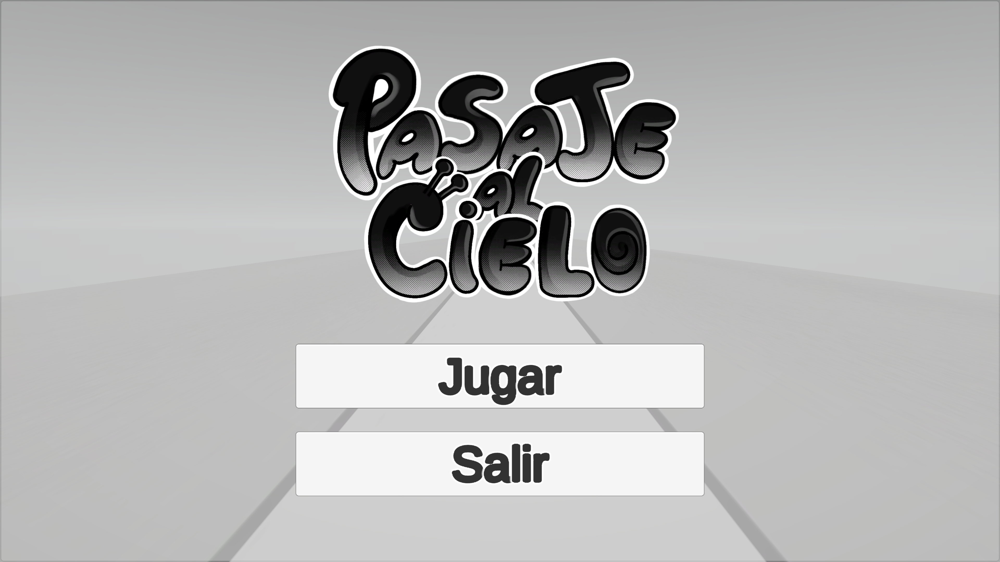
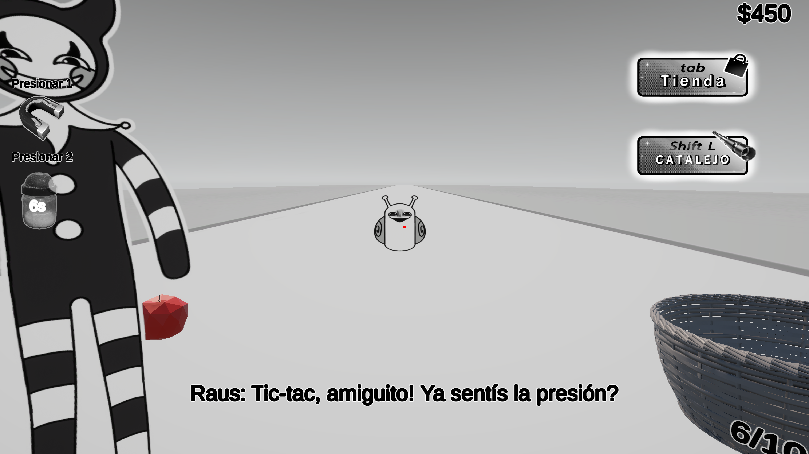
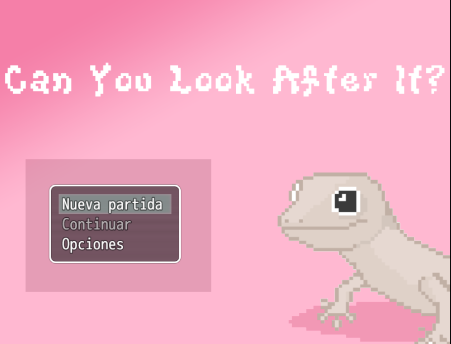
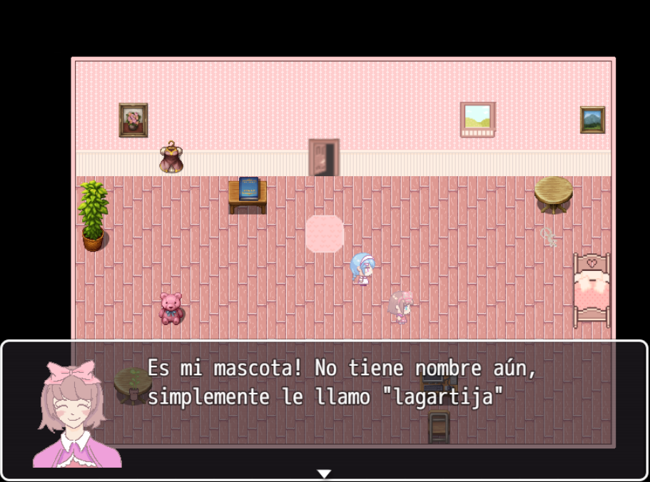
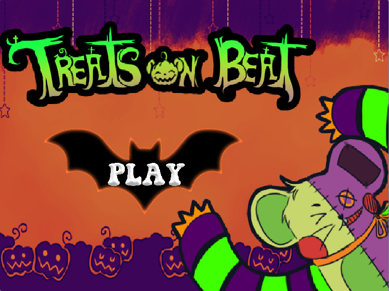
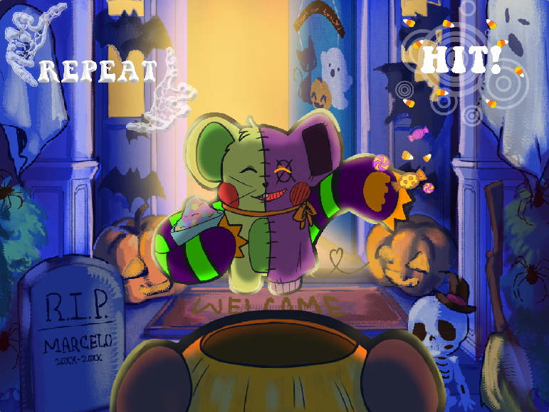
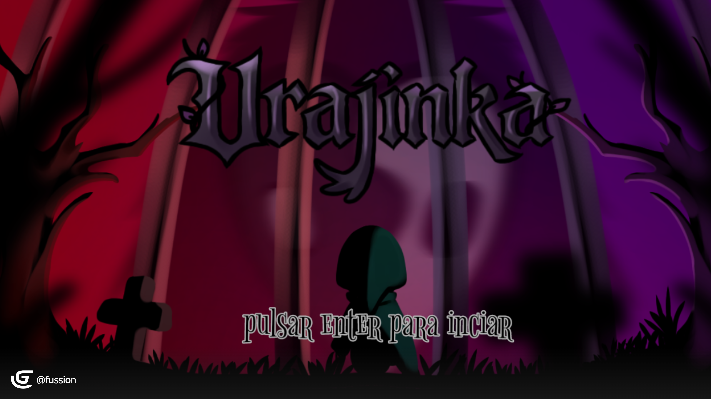

🐌 Pasaje Al Cielo
Hay un caracol que se acerca. No podés moverte.
Estás en el purgatorio atado a una silla y tu único
plan de escape es... vender manzanas.
Sí, manzanas. Que caen del cielo. Para comprarte
un pasaje literal al cielo antes de que el caracol
te alcance y pagues por tus pecados. Es una leyenda de Reddit... No preguntes.
Hecho en Unity


🦎 Can You Look After It?
Tu amiga te dejó a cargo de su lagartija mascota.
Simple, no? No tanto.
Un juego de trial and error en pixel art 2D donde cada objeto del
escenario es una nueva forma de arruinarlo todo.
Explorá, equivocate, y rezá para que la lagartija llegue viva al final.
Hecho en RPG Maker MV


🎃 Treats On Beat
Un juego rítmico de Halloween donde si presionas la tecla a tiempo
el ratón monstruo te da caramelos... y si fallás te quedás sin nada.
No se juega con los ojos sino con los sentidos,
escuchá el ritmo y no pierdas el beat! 🍬
Versión beta · Hecho en Scratch


🎭 Urajinka
Mi primer juego, hecho junto a mi mejor amiga y compañera para
la Global Game Jam 2026. La temática era máscaras, y esto
fue lo que creamos.
Te despertás sin recordar quién sos. Avanzás resolviendo
pequeños puzzles, esquivás una sombra que te persigue, y
eventualmente... te encontrás con vos mismo. O con lo que
queda de vos. Al final solo queda una pregunta: "¿Que soy?"
Lo que elijas te define. Como un ying yang
donde una mitad se come a la otra.
Hecho en Game Developer · Primer evento en la Game Jam ♡